Characters
Characters Places
Places Stories
Stories Species
Species Organizations
Organizations Glossary
Glossary Transportation
Transportation Monsters
Monsters Jobs
Jobs Summons
Summons Items
Items Magic/Skills
Magic/Skills Weapon Types
Weapon Types In-Crossovers
In-Crossovers Ex-Crossovers
Ex-Crossovers Release Dates
Release Dates Name Origins
Name Origins Famous Moments
Famous Moments Music Database
Music Database Features
Features Game Help
Game Help Game Evolution
Game Evolution Square Art
Square Art Fan Flash
Fan Flash Final Fantasy Forums
Final Fantasy Forums Updates
Updates Site Info
Site Info Feedback
Feedback Full Index
Full Index Links
Links Staff
StaffSephiroth
Final Fantasy 7
Sephiroth is one of the most loved(!) bosses in Final Fantasy, with one of the most famous FF songs - "One-Winged Angel". Despite all that, though, he's also one of the easiest final battles in the series. His first form - Bizarro Sephiroth - is a two-headed, multi-limbed pupaic monstrosity (indeed, bizarre). Your party must split into two or three groups to defeat him, with each group only having access to a selected group of targets. His next form, Safer Sephiroth (probably mistranslated from Seraph Sephiroth), grows one single wing out his back. His signature attack, "Super Nova", lasts about a minute, and destroys the whole solar system to try to knock you out. (!?!?). The final battle is for cinematic purposes only - a one-on-one with Cloud. See also FF7 Characters.
| 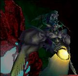 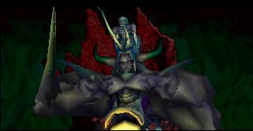 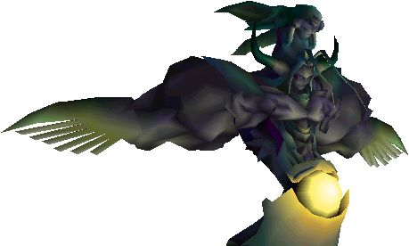 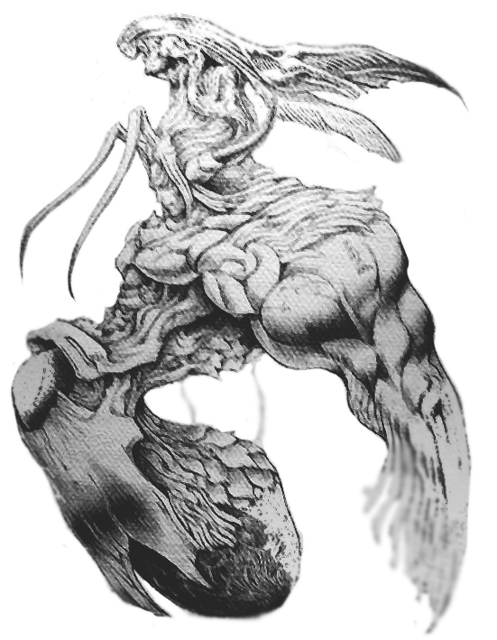 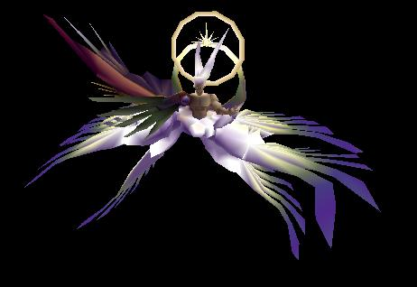 |
Shadow Lord
Final Fantasy 11
The final boss of the main game of Final Fantasy 11 and the Lord of the Beastmen. He began the crystal war by gathering most of the beastmen races and attacking the three nations. Though he was defeated by Zeid, the Shadow Lord was defeated, although Volker took the credit. Later when he was resurrected, he was revealed to be Raogrimm, a lost Galkan who gave his soul for vengeance of his love. He starts in his physical form, which is vulnerable to magic. After his defeat there, he switches to Dynamis Lord, his magical form, which is vulnerable to physical attacks. He has many powerful attacks, such as permanent Chainspell, Invincible, Blood Weapon, and the ability to clone himself for a few seconds.
| 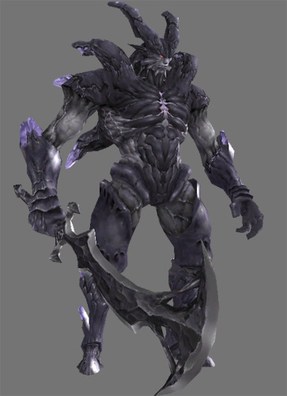 |
Shinryu
Final Fantasy 5 & Final Fantasy 10
In FF5, the ultimate dragon hides in a normal treasure box, but if the unwary traveler opens it, WHOA! It uses powerful water attacks and absorbs basically anything but physical damage. If you manage to defeat it, you'll get a "Dragon's Crest", which is as useless as the Proof of Omega. Still, can't beat that feeling of accomplishment, eh? In the GBA version, an even stronger Shinryu, Neo Shinryu, can be found in the Sealed Temple, arguably the hardest fight in the whole game! In FF10, Shinryu returns in the Monster Arena, and becomes available after capturing a set of aquatic monsters. He is battled underwater.
| 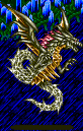 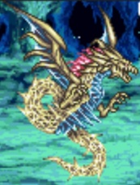 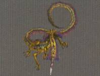 |
Shuyin
Final Fantasy X-2
Shuyin is the final fight of the FFX-2's storyline. See FFX-2 Characters for more information about his significance. All his attacks are the same as the overdrives of his counterpart, but he goes down quickly.
| 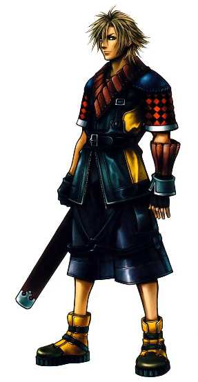 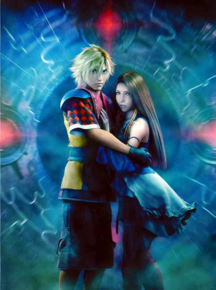 |
Trema
Final Fantasy X-2
This old guy is at the very bottom of the Via Infinito. After defeating Paragon, an Omega Weapon-type creature, you are thrust directly into battle with him. He's amazingly fast and strong (both physically and mentally) for a geezer. Winning nets you the Iron Duke accessory, which makes every other battle, even in New Game+, pathetically easy.
| 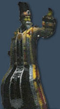 |
Ultima
Final Fantasy Tactics
Due to the nature of Tactics' battle system (five against one? come on!), this battle is practically a joke. He starts off tough with a bunch of Ultima Demons, but then turns into a winged giant (a la Sephiroth) with super spells like All-Ultima, which really don't pose much of a problem at all. He blows up the airship he's standing on when you're finished with him.
| 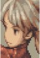 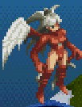 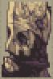 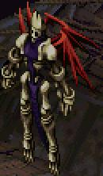 |
Ultimecia
Ultimecia is the main antagonist of FF8 (see FF8 Characters) who only appears and speaks at the end. Although she doesn't have much personality, she packs a lot of punch. Any GF's in the process of being summoned can be wiped out, so that strategy won't work here. She can also remove any one spell (no matter the quantity) at once, even if it is junctioned. After her first form is defeated, she then summons the ultimate GF - Griever. After that is defeated, she then junctions herself to Griever, making a strange merged beast. Her final form is a giant robot sorceress, who has the capability to cast two strong spells - "Hell's Judgement", which will bring the entire party's HP down to one, and "Apocalypse", an ultima-like attack (which can actually be drawn and used by the party).
| 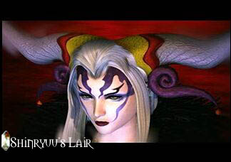 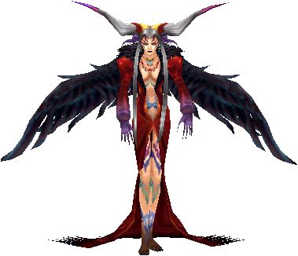 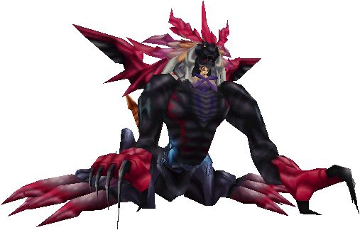 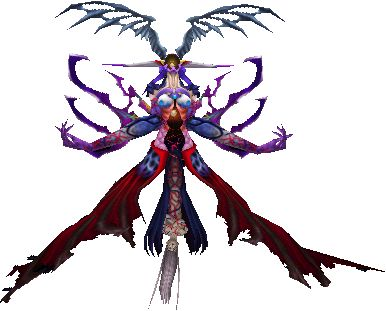 |
The Undying
Final Fantasy 12
The final version of Vayne fused with Venat is remarkably similar to Bahamut (in fact, the two take pieces of the warship Bahamut to create this final form). It uses Megaflare, Gigaflare, and Teraflare (its eyes light up red during the second and blue during the third, mirroring the colors of Neo Bahamut and Bahamut ZERO in FF7). (We still need a better image of this.)
| 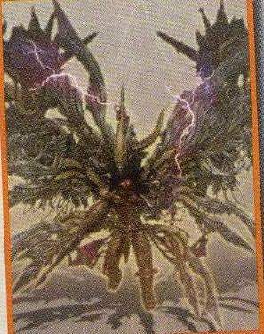 |
Vegnagun
Final Fantasy X-2
Vegnagun is the ultimate weapon, with the capability to destroy Sin, and incapability to distinguish friend and foe. It appears to be controlled by some sort of organ. Yuna, Rikku, and Paine work their way up from the tail to the legs, arms, torso, and finally the head, before confronting the weapon's controller.
| 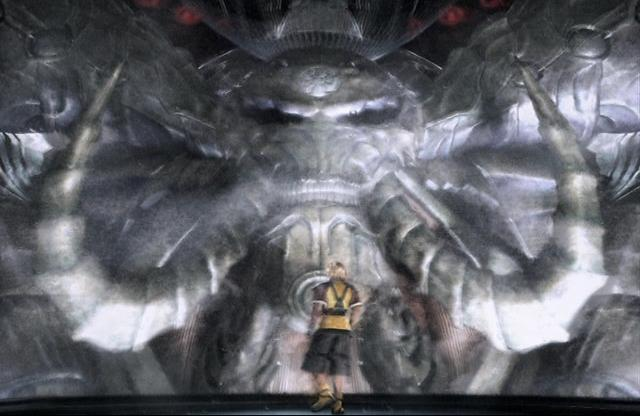 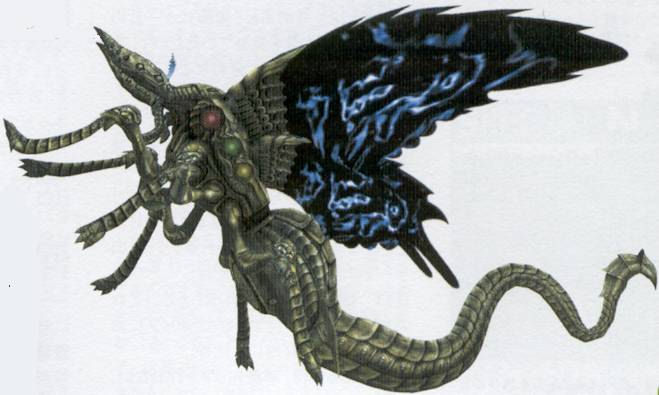 |
War Mech
Final Fantasy 1
AKA Death Machine (JP). This giant robot guards the bridge to Tiamat's lair. The chance of encountering it is only 5%, but if met, its repeated nuclear attacks will bring the heroes to its mercy.
| 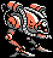 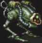 |
Yiazmat
Final Fantasy 12 / FF12: Revenant Wings
AKA Yazmat (JP). This wyrm is the final mark, and is only available to fight (in the Ridorana Cataract) after beating its little brother, Hell Wyrm, in the Sochen Cave Palace. Both fights have multiple health bars; Yiazmat has over 50 million HP! Both fights also allow you to leave in the middle and heal up; the HP of the boss will remain depleted. Yiazmat can take several hours to beat, after which you gain the last ingredient for the Wyrmhero Blade.
CP: One Deity among Dragons, One great Wyrm to rule all Wyrms of the World, by the Creator Himself created. Legend says it's an Anima, Guardian to a sacred Blade. Though most sacred amongst its Kind, its great Power drove it to Madness, and in the End, it became a threat to it's own Creator. His Master was killed by Yiazmat, robbing Montblanc of all Joy in Life,and he would have Revenge.
In RW, Yiazmat is holed up in the tenth and last floor of the Midlight Deep, and beating him will power up Vaan's Anastasia sword.
| 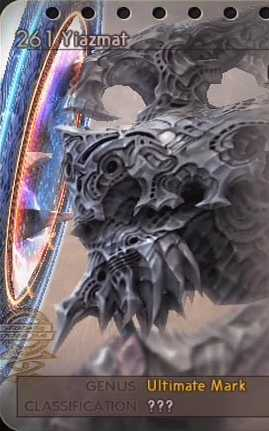 |
Yu Yevon
Final Fantasy 10
Seeing the final boss of FF10 is most definitely a "WTF" moment. This fight is more for cinematic purposes than a challenge, since your characters have auto-life cast on them. Yu Yevon is just a floating, black, blobby squid who first possesses your Aeons and forces you to destroy them. After that, he attacks with spells like Gravija, Ultima, and Osmose. He can heal himself each turn for 9,999 HP, and if that wasn't enough, the Yu Pagodas assist with curing as well. (See FF10 Characters and FF10 Story for more information)
| 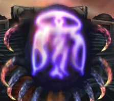 |
Zeromus
Final Fantasy 4
The physical representation of Zemus' rage and hatred looks pretty nasty even when it doesn't do much, but when you reveal its final form, it looks like a cross between a Metroid and an Alien. It uses several freaky spells, including Black Hole.
| 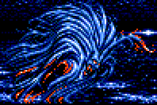 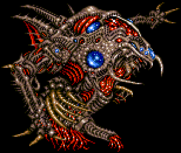 |
Zeromus EG
Final Fantasy 4 Advance
The final boss in the optional Lunar Ruins, Zeromus EG is named so for the use of his "easy game" version sprite. Using similiar attacks and patterns as his standard version, EG is also appreciably tougher.
| 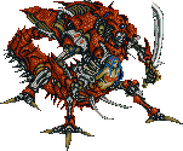 |
Feolthanos Exultant
Final Fantasy 12: Revenant Wings
The Last Auralith, Feolthanos consists of three parts (Medi, Dex, and Sinis), being the head, right hand, and left hand, respectively. Each has one massive attack, but worse are the Wing Wraiths he constantly summons. When you finally manage to get his HP down, he'll summon Bahamut to give you grief.
| 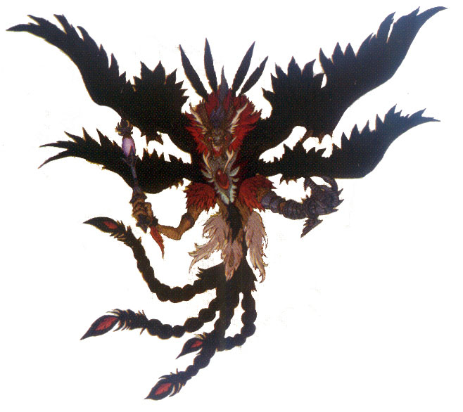 |
Final Fantasy, all games and animation bearing the Final Fantasy name, and all characters in said games or animation are copyright their respective creators, including but not limited to Squaresoft, Square Enix, Square EA, Tokyo TV, and ADV Films.